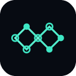
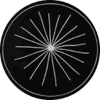
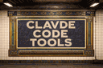
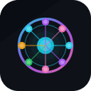
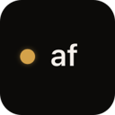

Coding AI agent tools
219 coding tools in the AgentScout directory, each with a link-checked listing.
There are 219 coding tools: 172 open source, 9 source-available, 24 free or freemium, 10 paid, usage-based or enterprise, 4 pricing on the maker's site.
Tasks in this category
/best/ & /compare/ placement for $49, or book the exclusive $99/wk sitewide & newsletter sponsor slot.Showing 219 of 219 tools
Ovis
Free client for the herdr agent multiplexer that lets you read and answer Claude Code, Codex and every other agent pane on your computer from a phone, desktop app or any browser, either as a chat with tap-to-approve.
Added
Oil UI
UI design skill for Claude Code, Codex and other coding agents that explores several distinct visual directions, compares them side by side and refines the chosen one against real screenshots. Free open-source skill.
Added
Cmux
Open source Ghostty-based macOS terminal with vertical tabs and notifications for AI coding agents. Built for multitasking, organization, and programmability
Added

Loop Engineering
Practical patterns, starters & CLI tools for loop engineering with AI coding agents. Design systems that prompt and orchestrate agents (inspired by Addy Osmani and Boris Cherny).
Added
PI Desktop
Local-first AI coding agent desktop: Electron + Rust host core + pi Agent Harness + user-installable plugins
Added
Anti Slop
Rules for an AI coding agent to filter out generic AI-generated UI designs, text, and code
Added

ANUS
A free coding agent in your terminal. It runs on the smartest free model that is up today
Added
Clawd On Desk
A pixel desktop pet that watches Claude Code, Codex, Cursor & other AI coding agents — so you don't have to
Added
Adhd
ADHD — a skill for coding agents. Tree-of-thought with pruning, built on the Claude & Codex Agent SDK.
Added
Modlens
The first vision plugin for DeepSeek Harness, and the vision bridge for every text-only coding agent. Paste an image, get structured JSON evidence (OCR, layout, semantics).
Added
Rapid MLX
Rapid-MLX is an open-source (Apache 2.0) OpenAI- and Anthropic-compatible LLM inference server for Apple Silicon, built on MLX, focused on reliable tool calling for coding agents. Up to 4× faster.
Added
Teaql Agent Kit
A model-driven harness for AI coding agents: semantic modeling, app generation, progressive API Assist and evidence-based verification
Added
Stop That Shit
Stop That Shit（ ）｜ Codex/GPT Hook + Skill Guard： AI coding agent 、 。 A multi-platform Hook + Skill Guard for AI coding agents in Codex/GPT workflows: stop unrequested hashes, checksums, and task-scope creep
Added
Better Harness
An open-source Harness Engineering platform for coding agents—define harnesses as code, run controlled experiments, inspect evidence, and compare outcomes. Turn task evidence into actionable team and.
Added

Claude Code Tools
Practical productivity tools for Claude Code, Codex-CLI, and similar CLI coding agents
Added
Zeroshot
Open-source orchestration for coding agents. Define your own workflows, reviewers and repair loops.
Added
Erd Editor
Design database schemas as ERDs in your browser, VS Code, JetBrains IDEs or Obsidian. Import SQL, DBML and GraphQL, export DDL and code, and let coding agents edit live over MCP
Added
Agtx
The blackboard for coding agents - agentic development environment for claude code, codex, cursor, opencode, grok and more
Added
Zerostack
Lightweight coding agent written in Rust, optimized for memory footprint and performance
Added
Cc Safety Net
A pre-execution guard for AI coding agents. It blocks destructive Git and file system commands, plus common attempts to access sensitive files, before a tool call runs.
Added
Spec Kitty
Spec-Driven Development with organizational governance. Specs tell AI agents what to build; Charter governs how they build it.
Added

Agentic Coding Flywheel Setup
Bootstraps a fresh Ubuntu VPS into a complete multi-agent AI development environment in 30 minutes: coding agents, session management, safety tools, and coordination infrastructure
Added
Agmsg
Cross-vendor messaging for CLI AI coding agents — let Claude Code, Codex, Gemini & Copilot talk to each other in one team. Bash + SQLite, no daemon, no framework
Added
Aegis
Make AI coding agents architecture-aware: baseline-first, evidence-verified, drift-checked, and safe across long tasks
Added
Oh My Agent
A specialist team for the coding agent you already use: 12 roles, 21 workflows and 33 skills that plan, build in parallel, review and debug, leaving plans, ADRs and results as files. Gates wait for your own tests.
Added
Scrawl
Mac app that lets you show a coding agent a problem: press a hotkey, talk, click and draw over your screen or a mirrored iPhone, and Scrawl turns it into transcribed, cropped frames you paste into your agent.
Added
Termish
Open source mobile SSH/Mosh terminal for Android and iOS with Herdr integration, SFTP files, remote screen, and native agent chat for Codex-style workflows.
Added
Diffinery
Open source, agent-first GitHub alternative on your own Cloudflare account: git hosting, pull requests, Actions-compatible CI, and agents with their own accounts.
Added
Elephant-Goldfish Model
Elephant-Goldfish Model is an open-source method and plugin from Google for spec-driven development with AI coding agents. A deep-context agent drafts the design, then fresh zero-context subagents stress-test that spec for gaps and wrong assumptions before any code is written, which catches problems that a single long-running agent tends to miss.
Added
PiG
PiG is a faithful Go port of Pi, the open-source terminal coding agent, first developed at Hewlett Packard Enterprise. It keeps Pi's behaviour and extension model while shipping as a single fast Go binary, so you can run the same minimal, hackable coding agent without a Node.js runtime.
Added
ml0x
Wraps Claude Code in a 4-stage pipeline (analyze, implement, test, review) with budget limits and quality gates.
Added
Foremerge
Foremerge is an open-source coordination layer for teams of coding agents, built on top of Git. Each agent keeps its own worktree, but they share what they intend to change, claim the parts of the code they are working on and verify each other's change sets, so conflicting plans are caught before they turn into merge conflicts. It also works over MCP.
Added

CodeAF
CodeAF is an open-source software factory from AgentField built to run on open models. It ships ready-made specialist agents you call with slash commands, one to build features like a senior developer, one to audit code for security issues and one to review GitHub pull requests, and spreads the work across a pool of models to balance cost and quality.
Added
Machinist
Machinist is an open-source software factory for coding agents. It runs agent jobs on your laptop, a virtual machine or a Kubernetes cluster, connects to GitHub so you can review the changes they make, and automates routine repository upkeep such as dependency bumps and fixes, with evals to check the results.
Added
Concord
Concord lets coding agents message each other and work together in a shared workspace. Agents running in different tools or on different machines can hand off tasks, ask each other questions and review each other's code in real time through its MCP server, so a team of agents can coordinate without you copying messages between terminals.
Added
Orbi
Orbi is an open-source (AGPL-3.0) software factory for GitHub repositories. When you label a GitHub Issue ai-ready, Orbi implements it in an isolated worktree, opens and reviews pull requests in a separate AI review session that checks acceptance criteria and repairs failing tests, merges the exact reviewed commit SHA, and cuts a tagged GitHub Release when a human applies the ai-release label.
Added
Zozo HQ
Zozo HQ is a coding-agent harness that turns dependency-ready issues from GitHub or matched Jira Cloud and Bitbucket Cloud into reviewable pull requests using isolated git worktrees, Claude Code, Codex or OpenCode via OpenRouter, and structured human clarification before anything merges.
Added
CCC
CCC (Claude Command Center) is a free, source-available local dashboard for macOS, Linux and Windows that puts every Claude Code, Codex, Cursor and five other coding-agent sessions on one visual board, highlights which session needs your input, tracks token usage and lets sessions continue on $0 models when rate limits hit.
Added
Waku
Waku is a native desktop app that gathers your local coding agents in one place. It shows sessions from Amp, Claude Code, Codex, Cursor, OpenCode, Grok and Pi on a single timeline that stays entirely on your machine, so you can follow and switch between agent runs without juggling terminals.
Added
Paritok
Paritok is a compression gateway that sits between a coding agent and its LLM. Using its own open-source 4B code-aware model, it shrinks tool output, files and conversation history on the fly without losing what the agent needs, which cuts token bills and lets agent sessions run longer before they hit context limits.
Added
agent-manager
agent-manager is a terminal app built on tmux for running many AI coding agents at once. It shows live status for Claude Code, Codex, OpenCode, Gemini, Grok, Cursor and other sessions in a foldable project tree, adds a quick prompt bar, and has a diff reviewer whose line comments are sent straight back to the right agent, on macOS, Linux and Windows.
Added
mu
mu is an open-source coding agent with a judgment kernel: a small, fast judge model makes the many routine decisions in each turn so the main model only gets the context it needs. It ships as a command-line tool and a desktop app and aims to keep coding sessions focused and cheap.
Added
superagnt
superagnt is a hosted MCP server and REST API that gives AI agents one key for the tools they lack: Instagram, TikTok, LinkedIn, YouTube, Reddit and X data, web scraping to clean markdown or JSON, email finding and lead enrichment, plus a real Postgres database, memory, schedules, queues and an inbox. Credits are charged only on successful calls, and it plugs into Claude, Cursor, Codex and other agents.
Added
OmniRush
OmniRush is a desktop coding agent for Windows, macOS and Linux, with a terminal CLI as well. It works through the files of your own projects, reading code, making edits and running commands, and gives free access to frontier models from a model picker, with GPT 6 Astra as the default. Builds for each platform are published on its releases page.
Added
AOCI-CODE
AOCI-CODE keeps a persistent, Git-versioned map of your whole codebase and database schema that your coding agent writes and a local MCP server governs. Agents in Codex, Claude Code, Cursor or OpenCode read the map once and know what each file is for, what it depends on and what must not break, instead of re-reading the repo on every task. It can index an existing codebase of up to about half a million lines and report how well it knows each area before taking over development.
Added
OpenHarness
OpenHarness from Autonomous is a native command center for running coding agents side by side, including Claude Code, Codex, Cursor, OpenCode, Devin, Amp and Copilot. It links your laptop, home server and GPU box into one window with a password instead of SSH keys or port forwarding, keeps code and keystrokes end-to-end encrypted through its relay, and is keyboard first. Agents keep working when you close it, and it extends beyond code to CAD, circuits, robots, games and music.
Added
GitHub Agentic Workflows (gh-aw)
Run AI agents in GitHub Actions workflows; v0.91.10 pre-release (Oct 13) defaults read-only workflows to no network.
Added
Jevgrep
CLI that finds relevant repo files and excerpts from natural-language questions for coding agents; claims ~40% cheaper agent runs.
Added
Claude Code
Anthropic's terminal coding agent that edits code, runs commands and handles git.
Added
OpenAI Codex CLI
OpenAI's open-source coding agent for the terminal; also runs in the cloud.
Added
Cursor
AI code editor with an agent mode and background agents.
Added
Devin
Cognition's autonomous software engineer that takes tickets and opens PRs.
Added
OpenHands
Open-source platform for autonomous coding agents.
Added
Aider
Pair-programming agent in your terminal that commits changes to git.
Added
Cline
Autonomous coding agent inside VS Code with step-by-step approvals.
Added
Roo Code
Discontinued: the open-source VS Code agent with custom modes (architect, code, debug) was shut down on May 15, 2026 and its repo archived; the team now builds Roomote, and roocode.com redirects there. Cline and the community fork ZooCode are the suggested alternatives.
Added
Windsurf
AI IDE with the Cascade agent, now rebranded as Devin Desktop after Cognition acquired Windsurf (windsurf.com redirects there).
Added
opencode
Open-source terminal coding agent that works with many model providers.
Added
Amp
Agentic coding tool for the terminal and editor.
Added
Gemini CLI
Google's open-source terminal agent powered by Gemini.
Added
GitHub Copilot
AI pair programmer with a coding agent that works from issues.
Added
Imbue
AI research company building tools for coding agents, including Sculptor for running parallel agents.
Added
Verdent
AI coding agent that plans, codes and verifies tasks in parallel.
Added
Nimbalyst
Visual workspace for working with coding agents like Claude Code on docs, code and plans.
Added
Runcell
AI agent for Jupyter notebooks that writes and runs code cells.
Added
Graphify
Turns a codebase plus its docs, SQL schemas, configs and PDFs into a knowledge graph that coding agents can query.
Added
Orca
Agent development environment for running a fleet of parallel coding agents on your own subscriptions and reviewing their work.
Added
Goose
Extensible open-source AI agent that installs, runs, edits and tests code on your machine with any LLM and MCP extensions.
Added
Herdr
Runtime for running and managing many coding agents side by side.
Added
Codewhale
Rust agent engine and terminal coding client with model choice, tool approvals and review flows.
Added
Oh My Claudecode
Multi-agent orchestration layer for Claude Code that coordinates teams of specialized agents.
Added
DeepSeek-Reasonix
Coding agent built for complex software engineering tasks on DeepSeek models.
Added
Oh My Pi
Terminal coding agent with IDE features wired in, from Stencil Labs.
Added
Context Mode
Context window optimizer for coding agents that sandboxes tool output and persists session memory.
Added
Crush
Charm's terminal coding agent with a polished TUI, multiple models and MCP support.
Added
Qwen Code
Open-source terminal coding agent from the Qwen team.
Added
Vibe Kanban
Kanban board for planning and running tasks with Claude Code, Codex and other coding agents.
Added
Beads
Issue-tracking memory for coding agents so they can keep track of long-running work.
Added
Planning With Files
File-based planning for coding agents, keeping Markdown plans that survive crashes and session resets.
Added
Happy Coder
Mobile and desktop app to run and control Claude Code, Codex and other agents using your own subscriptions.
Added
Paseo
Orchestrate multiple coding agents from desktop and mobile.
Added
jcode
High-performance coding agent harness written in Rust.
Added
Coder
Self-hosted cloud development environments for developers and their coding agents.
Added
DeepCode
Open agentic coding system that turns papers and specs into code with multi-agent orchestration.
Added
Superset
Agentic IDE for orchestrating many coding agents in parallel.
Added
Agent Orchestrator
Runs and supervises teams of coding agents from planning to merge.
Added
HumanLayer
Tools for getting coding agents to solve hard problems in complex codebases.
Added
OpenChamber
Agentic development environment built around the OpenCode agent.
Added
Trail Code
Context layer that makes Claude Code, Cursor, Codex and other coding agents faster and cheaper on large codebases.
Added
Ralph for Claude Code
Autonomous development loop for Claude Code that keeps iterating until the task is done.
Added
Hunk
Review-first terminal diff viewer for checking what coding agents changed.
Added
Oh My OpenCode Slim
Lean multi-agent suite for OpenCode that mixes models and delegates tasks automatically.
Added
Plannotator
Visually annotate and review coding-agent plans and diffs, then send feedback back to the agent.
Added
Terax
Lightweight terminal-first AI development environment.
Added
Worktrunk
CLI for managing Git worktrees so several AI agents can work in parallel.
Added
mini-SWE-agent
Tiny 100-line agent that solves GitHub issues or helps on the command line, from the SWE-agent team.
Added
SuperPlane
Open-source software factory (v1.0) that helps engineering teams put AI coding agents to work across multi-step workflows with built-in guardrails and verification.
Added
Gentle AI
Configures the coding agents you already use with shared rules, skills and settings.
Added
OpenRig
Builds persistent teams of Claude Code, Codex and Pi agents with roles and shared context.
Added
Backlog.md
Markdown task board in your Git repo for coordinating work between people and AI agents.
Added
Mission Control
Self-hosted control plane for dispatching tasks to agents, reviewing runs and tracking spend.
Added
Semble
Fast code search for agents that uses far fewer tokens than grep and file reads.
Added
Potpie
Builds a knowledge graph of your codebase so agents can help across the software lifecycle.
Added
Tokscale
Tracks token usage across AI coding agents from your terminal.
Added
Code-Graph-RAG
Graph-based RAG for monorepos that lets agents query and edit multi-language code.
Added
Entire CLI
CLI that captures AI agent sessions alongside your Git commits.
Added
Integuru
Agent that builds integrations by reverse engineering platforms' internal APIs.
Added
gptme
Terminal agent with local tools that writes code, runs commands, browses the web and uses vision.
Added
Jupyter AI
Official JupyterLab extension that connects AI agents and chat to notebooks.
Added
Command Code
Coding agent built for open models.
Added
abtop
htop-style monitor for Claude Code and Codex sessions and token use.
Added
Grok CLI
Open-source coding agent for the Grok API.
Added
Maestro
Command center for orchestrating multiple coding agents.
Added
Ralph Orchestrator
Orchestrator for autonomous agent loops using the Ralph Wiggum technique.
Added
Ruler
Applies one set of rules to all your coding agents.
Added
CodeBoarding
Generates interactive architecture diagrams of codebases.
Added
Nanocoder
Community-built open coding agent for your terminal.
Added
Coddo
Desktop app that puts a visual interface and voice input on top of terminal coding agents.
Added
Munder Difflin
Free, open-source harness that runs Claude Code, Codex, Gemini CLI and other terminal agents together like an office.
Added
BackAnt Kairos
Backant's Kairos, an autonomous developer that runs Claude Code against your repository.
Added
Coldtea
Agents that test every pull request on real devices, watch production and file issues before users hit them.
Added
Roomote
Cloud coding agent from the Roo Code team that runs your real dev environment, verifies its work, reviews code with a second model and hands back PRs with live previews; works from Slack, Teams, GitHub and Linear, self-hosted or on its cloud.
Added
Open Interpreter
Terminal coding agent forked from OpenAI's Codex and tuned for low-cost and open-weight models, with switchable harness modes that imitate tools like Claude Code.
Added
Open SWE
LangChain's asynchronous coding agent that takes work from GitHub issues, Slack or Linear, implements it in an isolated sandbox and opens a pull request.
Added
MiMo Code
Xiaomi's terminal coding agent with persistent project memory across sessions; works with any major model provider and is tuned for Xiaomi's MiMo models.
Added
CC Switch
Desktop manager for Claude Code, Codex, Gemini CLI, OpenCode, OpenClaw and other coding agents that switches API providers in one click and manages MCP servers, skills and prompts.
Added
code-review-graph
Local code knowledge graph built with Tree-sitter that serves compact review context over MCP, so coding agents read only the files a change touches.
Added
Repomix
CLI and web tool that packs an entire repository into a single AI-friendly file (with an MCP server) so coding agents and LLMs get full codebase context.
Added
React Doctor
Checker that catches bad React patterns written by coding agents and reports issues to fix.
Added
Claude Context
Zilliz MCP plugin that adds semantic code search to Claude Code and other coding agents, using your whole codebase as context.
Added
Repowise
Codebase intelligence tool that indexes code, call graph, git history and docs locally and answers questions for you and your coding agent over MCP.
Added
MobileBuildMCP
Sentry's MCP server and CLI that gives coding agents build, test and run tools for iOS and macOS projects.
Added
21st Magic MCP
MCP server from 21st.dev that lets Cursor, Claude Code and Windsurf search and generate React and Tailwind UI components inside the editor.
Added
coucou
Mac notch and phone companion that monitors your Claude Code, Codex, Cursor and Gemini CLI sessions and lets you approve permissions on the go.
Added
TUIOS
Terminal window manager with tiling panes, persistent sessions and one inbox where coding agents report their state and message each other.
Added
MonkeyCode
Chaitin's self-hostable AI development platform for engineering teams with dev environments, model management and AI task management.
Added
Kungfu
Workspace that keeps the same task moving across Codex, Claude, OpenCode and other agents without re-explaining context at each handoff.
Added
Kiro Crew
Kiro's open-source, persistent development workspace that runs unattended and recurring coding tasks locally or on your own hardware.
Added
Codeg
Multi-agent coding workspace that brings sessions from Claude Code, Codex, OpenCode and other agents into one app so they can work together.
Added
golutra
Multi-agent workspace that turns Codex, Claude Code and OpenClaw CLIs into one orchestrated team with parallel execution and task tracking.
Added
LazyCodex
Agent harness for Codex that adds project memory, planning, execution and verified completion for complex codebases.
Added
OpenSumi
Framework for building AI-native IDE products, with an MCP client and agent features.
Added
SocratiCode
Codebase context engine for AI agents with hybrid semantic search, dependency graphs and impact analysis, available as MCP, plugin or skill.
Added
Zeron
Native control plane for running and monitoring Claude Code, Codex, Cursor, Devin and other coding agents locally.
Added
Squad
Human-led AI agent teams for GitHub Copilot that live in your repo as files and act as frontend, backend, tester and lead specialists.
Added
shadcn/ui MCP Server
MCP server that gives AI assistants shadcn/ui v4 components, blocks and demos for React, Svelte, Vue and React Native.
Added
HolyClaude
Containerized AI coding workstation with Claude Code, a web UI, a headless browser, several AI CLIs and 50+ dev tools.
Added
ripwire
Zero-dependency CLI and MCP server that gives coding agents a ranked call graph, blast radius and tests-to-run before and after edits.
Added
AgentsMesh
Platform for running many AI coding agents across your own machines and scheduling, isolating and steering them from one console.
Added
Gemini MCP Tool
MCP server that lets Claude and other assistants call the Gemini CLI to analyze large files and codebases with its big context window.
Added
Agent Teams
Free desktop app where teams of AI agents take tasks from a kanban board, message each other and review each other's work.
Added
Intelligent Terminal
Experimental fork of Windows Terminal with native integration for ACP-compatible agent CLIs.
Added
Ante
Self-contained Rust terminal coding agent from Antigma Labs that works with any model and has no runtime dependencies.
Added
Zed
High-performance, multiplayer code editor from the creators of Atom and Tree-sitter, with built-in AI agent editing for macOS, Linux and Windows.
Added
Open Code Review
Alibaba's AI code review CLI that combines deterministic pipelines with an LLM agent to post line-level comments on Git diffs, using OpenAI or Anthropic models.
Added
Tabby
Self-hosted AI coding assistant that offers an on-premises alternative to GitHub Copilot with no database or cloud service required.
Added
Task Master
AI task-management system for coding agents that breaks a PRD into tasks and plugs into Cursor, Windsurf, Claude Code and others via MCP.
Added
AutoDev
Multi-agent development platform built on Kotlin Multiplatform for research, coding, review and data queries across IntelliJ, VS Code, CLI and more.
Added
Container Use
Dagger's MCP server and CLI that gives each coding agent its own containerized environment so several can work in parallel safely.
Added
Compozy
Operating system for AI agents that turns Claude Code, Codex, Gemini CLI and Cursor into a team with task handoff, loops, jobs and shared memory.
Added
Pydantic Deep Agents
Self-hosted terminal AI assistant and Python framework on Pydantic AI, with tool calling, sandboxed execution, multi-agent teams and checkpoints.
Added
Frontman
Browser-based AI coding agent: click an element in your running app, describe the change, and it edits the source with hot reload.
Added
Next.js DevTools MCP
Vercel's MCP server that connects coding agents to running Next.js dev servers for live errors, routes, logs and docs.
Added
CodeGraphContext
MCP server and CLI that index local code into a graph database so AI assistants can query code relationships.
Added
CodeRabbit
AI code review for pull requests, with PR triage, change explanations and continuous security monitoring.
Added
cubic
AI code review that catches bugs in complex codebases on every pull request.
Added
Baz
AI code review platform that helps engineering teams ship better code faster.
Added
Dosu
Knowledge infrastructure that keeps docs, specs and agent memory current with your code for teams and coding agents.
Added
TRAE
AI coding IDE and agent that works alongside you in your editor to write, edit and run code.
Added
Svelte MCP
Official Svelte MCP server that gives coding agents Svelte docs and autofixing tools.
Added
Cypress Cloud MCP
Cypress's MCP server that brings Cypress Cloud test results and accessibility reports into AI coding workflows.
Added
Cobalt
Cloud harness for coding agents that runs every task in its own environment and automates work with loops.
Added
CLI Agent Orchestrator
AWS Labs tool that coordinates several coding CLIs such as Claude Code, Kiro and Codex as a team, each in its own tmux session.
Added
Kodus
Self-hostable AI code reviewer for GitHub, GitLab, Bitbucket and Azure DevOps pull requests that works with the model you choose.
Added
Kilo Code
Open-source AI coding agent for VS Code, JetBrains, the CLI and the cloud that works with 500+ models at no markup.
Added
Warp
Agentic development environment built from the terminal, now open source, for running coding agents and cloud software factories.
Added
Factory
Agent-native software development platform whose Droids write code, run tests and handle deployments from the IDE, terminal or Slack.
Added
Jules
Google's asynchronous coding agent that works on your GitHub repo in a cloud VM and comes back with a tested pull request.
Added
Greptile
AI code reviewer that reads your whole codebase to review pull requests and catch bugs before merge.
Added
Mirror CLI
Reflection AI's terminal coding agent that reads code, edits files and runs commands in isolated git worktrees, using the open-weight Beam model by default.
Added
Pi
Minimal, extensible open-source terminal coding agent and agent toolkit from Earendil, with a multi-provider LLM API, TypeScript SDK, RPC mode and installable extensions, skills and themes.
Added
Orke
BOMTOBE's free desktop workspace for Claude Code, Codex and other coding agents: terminal sessions, an in-app browser the agent can use, a Git review window and scheduled AI employees.
Added
Oh My OpenAgent (OmO)
Agent harness add-on (OmO) for OpenCode and Pi that runs multi-model coding agent teams with memory, planning and parallel workflows.
Added
Atlas
Source control for coding agents that checkpoints every agent run, links commits back to the prompts behind them and lets you query changes across agents.
Added
OpenQodex
Code review that runs inside your coding agent before you push, combining security and quality scanners with a separate AI reviewer.
Added
sem
Semantic layer on top of Git that diffs, blames and traces impact by function and class instead of by line, with an MCP server for coding agents.
Added
shadcn/lint
Linter for Tailwind design systems from shadcn that turns your design rules into checks coding agents can run and fix against.
Added
Agor
Multiplayer workspace where teams run and watch coding agents such as Claude Code and Codex together on shared boards.
Added
Conductor
Runs multiple coding agents such as Claude Code, Codex, Cursor, and OpenCode in parallel across local Git worktrees or isolated cloud sandboxes, with Mac and iOS apps to review and merge their work.
Added
Augment Code
Agentic software development platform for engineering teams, with coding agents that use deep context from large codebases.
Added
ZCode
ZCode is Z.ai's open-source AI coding workspace and official harness for GLM-5.3, with a desktop app, web interface and terminal agent that run multiple agents on long goals, plus control from WeChat, Feishu or Telegram.
Added
Cloudroom
Cloudroom runs Claude Code, Codex, Pi and other coding agents in the cloud, each in its own isolated sandbox on its own Git branch, using your own model logins; the Rust core is open source to self-host, and a desktop app manages local and cloud agents.
Added
Shipyard
Shipyard, from coss.com, runs Claude Code, Codex and other coding agents on your own dev machines, each task in its own worktree with its own terminals, dev server and live page previews, so agents keep working when your laptop sleeps.
Added
Vicoa
Vicoa is an agent-native IDE for running Claude Code, Codex, Gemini and 40+ other coding agents in parallel, each on its own git worktree, from desktop, web or phone, with notifications when an agent needs you.
Added
Muxin
Muxin is a free, open-source desktop app that puts all your Macs, Linux, Windows and cloud machines in one window, so you can run Claude Code, Codex and other agent CLIs on any of them, see their screens and logs, and take changes to a pull request.
Added
Sno Station
Sno Station turns the coding agents you already use (Claude Code, Codex, Cursor, Hermes, OpenClaw) into one squad on your machine with shared memory, and its Self Learning reviews their sessions and proposes skill-file fixes you approve.
Added
rtk
A CLI proxy that sits between coding agents and your shell and trims noisy command output before it reaches the model, cutting token use on everyday commands like tests, builds and git. Free and open source, with an RTK Pro tier for teams.
Added
Understand-Anything
Turns any codebase, knowledge base or docs folder into an interactive knowledge graph you can explore and question, working inside Claude Code, Codex, Cursor, Copilot and Gemini CLI.
Added
opcode
A desktop app for Claude Code that lets you manage sessions, build custom agents, track usage and browse project history from a GUI instead of the terminal.
Added
CloudCLI
A web and mobile interface for Claude Code, Codex and Gemini CLI, so you can run and steer coding sessions from a browser or phone. Self-host free or use the hosted CloudCLI service.
Added
Emdash
A free, open-source agentic development environment (YC W26) for running Claude Code, Codex and other coding agents in parallel, each in its own worktree, then reviewing diffs, PRs and CI in one place.
Added
Toad
A terminal front end from Will McGugan (creator of Rich and Textual) for running AI coding agents like Claude Code, Gemini CLI and Codex through one polished, fast interface.
Added
CodeCompanion.nvim
An AI coding plugin for Neovim with chat, inline edits and agent tools that can read files, run commands and edit code, working with Anthropic, OpenAI, Copilot, Ollama and other providers.
Added
Reason Network
A small peer-to-peer daemon that links coding-agent sessions across your team's computers, so Claude Code, Codex, Cursor, Gemini CLI and other agents can see who is working on what and message each other directly, with no server.
Added
FuXi
A terminal AI coding agent that edits code, runs commands and works across 30+ model families, with parallel multi-provider inference and cost-aware model routing.
Added
nodeterm
A node-based terminal manager for macOS and Linux that shows real terminals and coding agents like Claude Code, Codex and Gemini as live nodes on an infinite canvas you can wire together.
Added
Zero
An open-source terminal coding agent written in Go that works with 30+ model providers, supports MCP, skills and subagents, and keeps all sessions on your own disk.
Added
Lody
A team workspace for running AI coding agents in parallel in isolated Git worktrees, with live diff review, GitHub integration and access from phone or desktop.
Added
tty7
A terminal workbench whose shell sessions survive closing the app, built so coding agents can drive other agents' terminals and you can reattach remotely.
Added
Repo Prompt
The community edition of Repo Prompt, a native macOS context-engineering app that packs the right files into prompts for AI coding work and exposes the same tools to agents via MCP.
Added
ThinkRail
JetBrains' lightweight agentic IDE that pairs you with the pi coding agent, with isolated git-worktree workspaces, editor tabs, terminals and diffs.
Added
hax
A minimalist terminal coding agent shipped as a single native C binary using a few MB of RAM, with first-class local models plus OpenAI, Anthropic and OpenRouter support.
Added
luvus
Mission control for AI coding agents: run, watch, resume and orchestrate Claude Code, Codex, Copilot, opencode and others from one terminal with a live view of each agent.
Added
MonoCode
MonoCode is a desktop app that puts the coding agents you already pay for behind one interface. It drives Claude Code, Codex, Cursor, Grok Build, OpenCode, Antigravity, Pi, Hermes Agent, Devin and others, using the subscriptions and logins already on your machine, so you never buy tokens through it. Each tab is an agent session and one composer sends work to whichever agent you pick, so several sessions can run side by side. It runs on macOS, Windows and Linux, with an iOS app in public beta.
Added
PR Lens
PR Lens helps people review code that agents wrote. For each pull request it draws animated architecture and data-flow diagrams inside the PR, showing which parts of the app were added, changed or removed, what else depends on the change and how a request now moves through the system. It also flags likely bugs, security holes and design problems in the same review comment, with a ready prompt to hand each fix to your coding agent or an autofix. The open-source core runs locally and installs as an agent skill.
Added
Wake
Wake is a desktop app that collects every coding-agent conversation on your computer into one searchable place. It reads the local history kept by Claude Code, Codex, Cursor, Copilot CLI, Gemini CLI, Antigravity, Devin and other agents, groups sessions by agent and project, and lets you find a past conversation in seconds and resume it in your terminal. It is read-only and nothing leaves your machine. Built in Rust, it runs on macOS, with Linux and Windows in beta.
Added
Tov
Tov is an experimental programming language designed to be written by coding agents. It uses TypeScript syntax minus a few traps (no any, null or loose equality, separate int and float types, and failing calls marked with try), so agents already know how to write it, and its compiler returns machine-readable fixes the agent can apply after every edit. Programs compile to small, fast native binaries, with published benchmarks against Rust, Bun and Node. Agents can learn it from the site's llms.txt.
Added
Sphinx
Open-source Git hook for agent-assisted coding: before code your agent wrote is pushed to a protected branch, it reads the diff and quizzes you on what the change actually does when things go wrong, and only lets the push through once you answer correctly. Works with Claude Code, Codex, Cursor and OpenCode.
Added
Reticle
Verification layer for AI coding agents: a dev-only SDK inside your web or desktop app lets the agent drive real flows and read network calls, app state and console, then returns a pass, fail or cannot-tell verdict with the file and line to fix; saved flows replay without an AI model and can gate CI.
Added
Top coding repos on GitHub (197)
| Repo | GitHub stars | Licence | Last push |
|---|---|---|---|
| opencode ↗ | 222,192 | MIT | 2026-10-27 |
| Claude Code ↗ | 153,533 | Proprietary (All rights reserved; Anthropic Commercial Terms of Service) | 2026-10-26 |
| CC Switch ↗ | 149,277 | MIT | 2026-10-27 |
| Graphify ↗ | 136,588 | Apache License 2.0 | 2026-10-26 |
| OpenAI Codex CLI ↗ | 131,122 | Apache License 2.0 | 2026-10-27 |
| Pi ↗ | 118,193 | MIT | 2026-10-27 |
| Gemini CLI ↗ | 108,564 | Apache License 2.0 | 2026-10-26 |
| Orca ↗ | 107,615 | MIT | 2026-10-27 |
| Zed ↗ | 92,278 | — | 2026-10-27 |
| OpenHands ↗ | 91,987 | MIT | 2026-10-27 |
| Understand-Anything ↗ | 88,504 | — | 2026-10-26 |
| rtk ↗ | 84,727 | — | 2026-10-25 |
| Cline ↗ | 70,912 | Apache License 2.0 | 2026-10-27 |
| Oh My OpenAgent (OmO) ↗ | 70,390 | — | 2026-10-27 |
| Open Interpreter ↗ | 68,693 | Apache License 2.0 | 2026-10-11 |
Top 15 of 197 by stars. Stars and licence come from each repo, checked when the listing was last verified.
All categories
Facts come from our directory listings; pricing is as each maker states it. Check official sites before you choose.